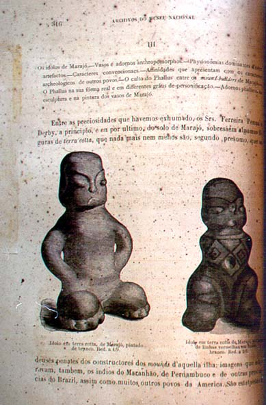

|
|  |
|
Ladislau Netto, Investigações sobre a archeologia brasileira
|
Around the same time, the director of the Brazilian National Museum (and trained botanist) Ladislau Netto published his 'investigations in Brazilian archaeology', in an attempt to replace literary and artistic indianism by properly 'scientific' research. Yet Netto's archaeology was still very much informed by what it supposedly sought to replace: rather than to condemn the monarchical state's indianist iconography of noble warriors and virtuous maidens altogether, Netto aimed to draw a clear distinction between the native 'Golden Age' of highly developed civilisations (related to those of the Incas and Aztecs and, possibly, even to European classical civilisations such as the Fenicians), of which, he claimed, his archaeological findings gave clear evidence, and their 'degenerate' descendents of the present. The true heirs of Brazil's 'prehistorical' splendor, Netto suggested, was the modern nation that was being forged under the guidance of Pedro II, the country's 'modernising' monarch.
|